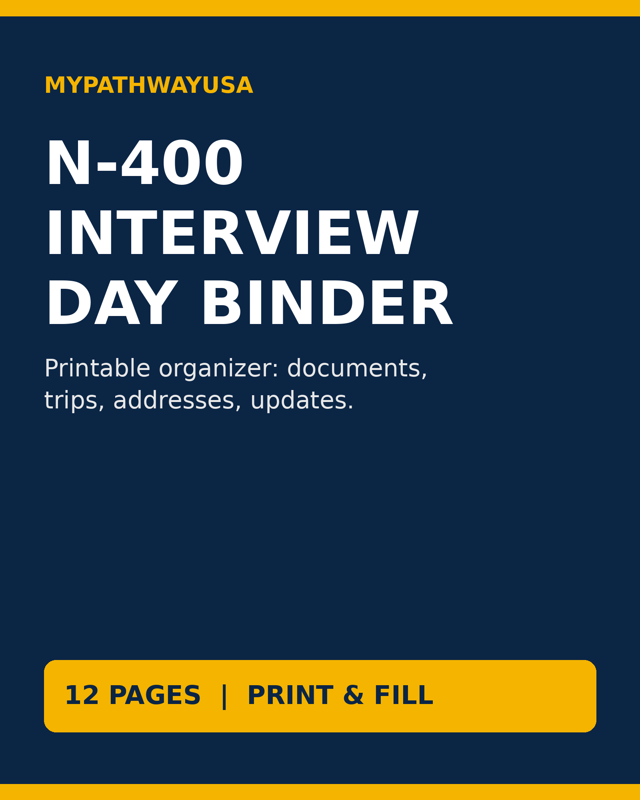

A printable, fill-in binder that helps you organize the documents, trips, addresses and updates USCIS asks about at the naturalization interview - built only from official USCIS checklists.
Free first: practice with our free interview guides. The binder is the paperwork organizer that goes with them.

The first 4 pages: how to use the binder, the official USCIS sources it uses, and the Tab 1 core-items checklist.
We use your email only to send this and occasional updates about this product. Unsubscribe any time by replying "stop".